CARA KONFIGURASI MAILSERVER DI DEBIAN
1. Login dengan sebagai "root"
2. Masukan DVD 2, kemudian ketikan perintah "apt-cdrom add"
3. Setelah selesai, Keluarkan DVD 2 dan masukan kembali DVD 1
4. kemudian instal aplikasi webmail dengan perintah
apt-get install postfix squirrelmail courier-imap courier-pop
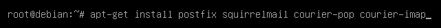
5.Pilih Situs Internet atau Internet Site lalu Enter
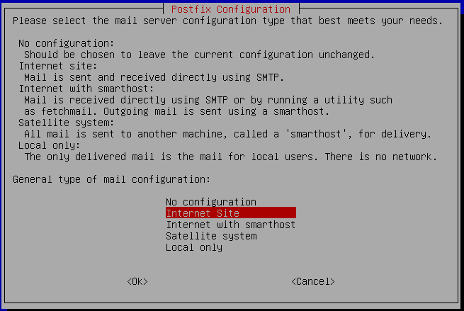
7. Isikan Isikan nama domail email yang akan kita buat, contoh : tkj-smkn1skh.net
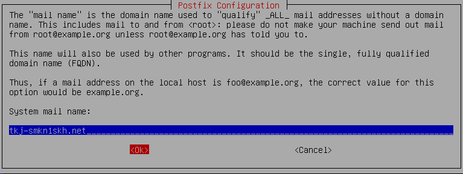
8.Pilih No
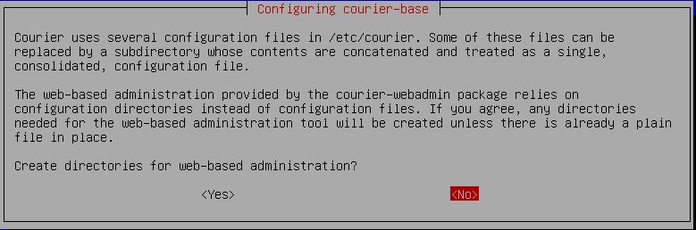
9. Proses instalasi aplikasi selesai. Selanjutnya kita buat sebuah folder untuk penyimpanan surat dengan perintah "maildirmake /etc/skel/Maildir"
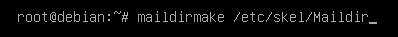
10. Setelah selesai, kita edit file main.cf dengan perintah "pico /etc/postfix/main.cf"
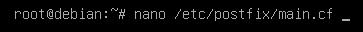
11. Kemudian tekan pgdn di keyboard sampai kursor ke akhir baris. Setelah itu tambahkan kalimat home_mailbox = Maildir/
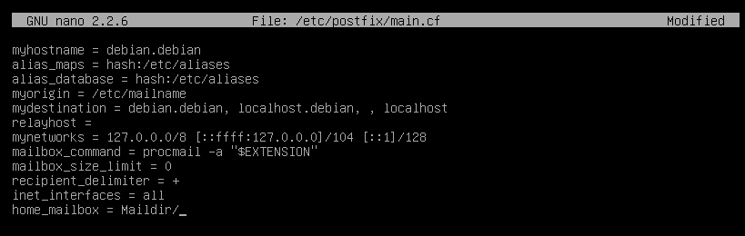
12. Simpan file main.cf , Setelah itu kita konfigurasi ulang postfix dengan perintah "dpkg-reconfigure postfix" lalu tekan Enter
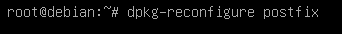
13. Pilih Situs Internet atau Internet Site
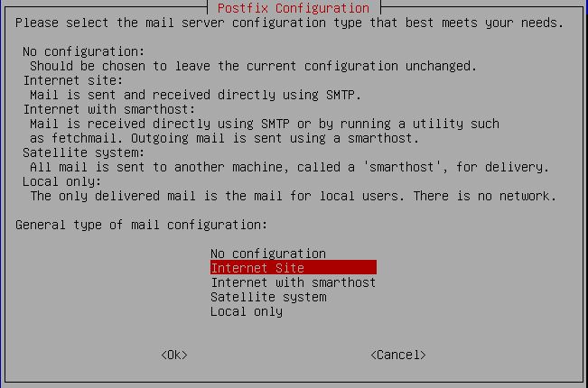
14. Isikan Isikan nama domail email yang akan kita buat, contoh : tkj-smkn1skh.net
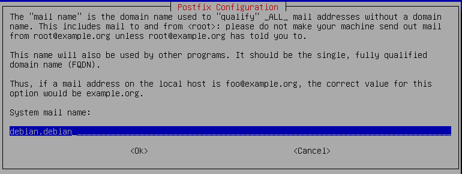
15. Penerima surel dan postmaster kosongkan saja
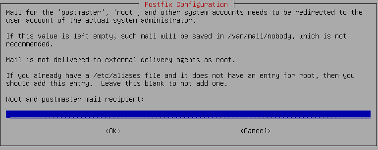
15. Setelah itu akan muncul seperti gambar dibawah yang otomatis terisi dengan “tkj-smkn1skh.net, debian.debian, localhost.debian, localhost” tekan Tab lalu Ok
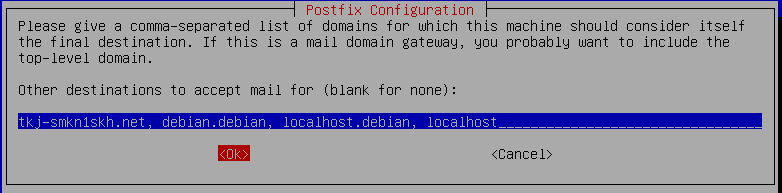
16. Pilih No lalu Enter
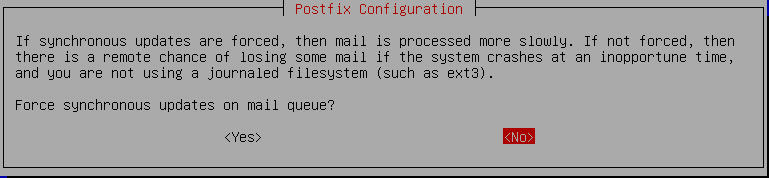
17. Kemudian Masukkan angka 0.0.0.0/0 pada baris akhir
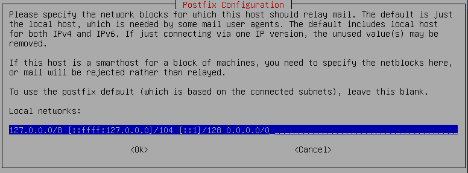
18. Pilih No
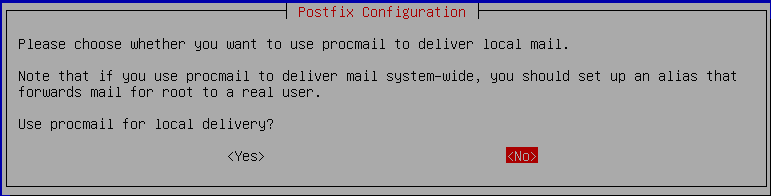
19. Biarkan “0” langsung tekan Enter
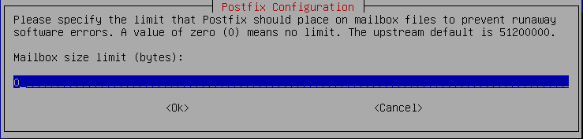
20. Biarkan + Pilih Ok
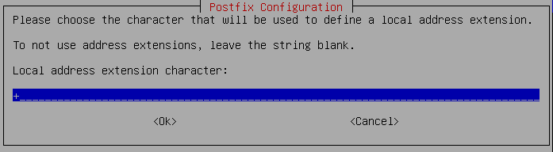
21. Pilih ipv4 lalu Ok
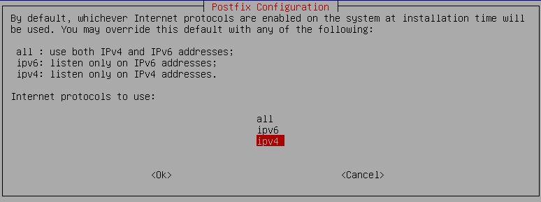
22. Ketik perintah #nano /etc/apache2/apache2.conf
pada baris terakhir isikan kata berikut ini
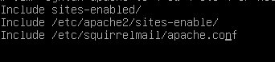
23. edit file konfigurasi squirrelmail
#nano /etc/squirrelmail/apache.conf
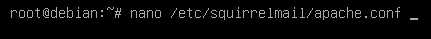
Ubah menjadi spt gambar dibawah :
Beri tanda pagar pada depan kata Alias
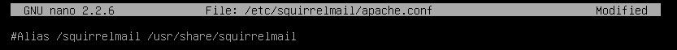
Setelah itu tambahkan *:80 pada < VirtualHost> lalu hapus tanda “#” dari sampai lalu save dengan menekan Ctrl + O
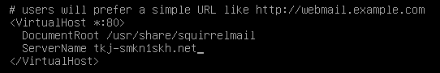
24. lalu restart webserver
lalu restart postfix
lalu restart courier-imap
lalu restart courier-pop
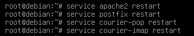
25. Kita coba pengujian di client buka webrowser anda tuliskan
mail.tkj-smkn1skh.net ,sebelumya pastikan client dapat nslookup tkj-smkn1skh.net melalu Command Prompt , apabila berhasil maka akan muncul seperti pada gambar dibawah
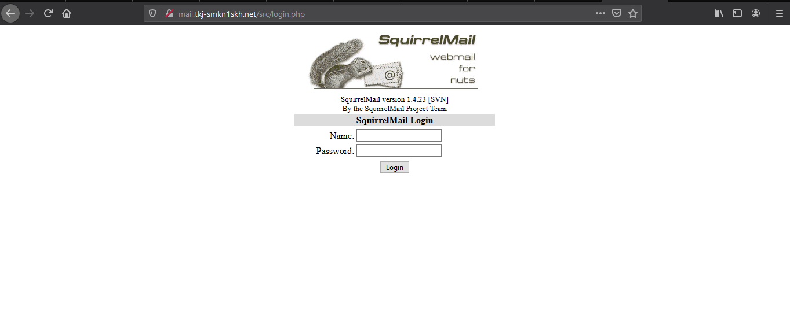
Lalu Login
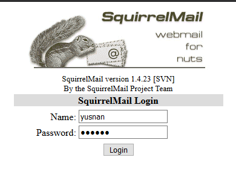
26. Untuk melakukan pengujian pengiriman e-mail buat user terlebih dahulu di debian
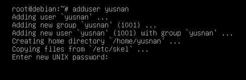
27. Pilih "Compose" dan coba mengirim e-mail ke diri sendiri lalu send
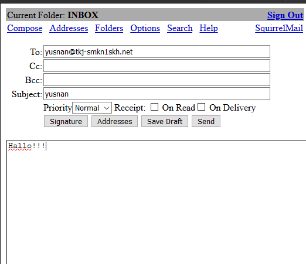
Jika berhasil maka pesan akan masuk ke dalam menu INBOX seperti gambar dibawah
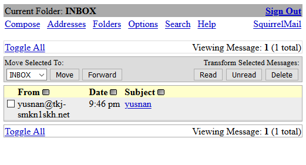